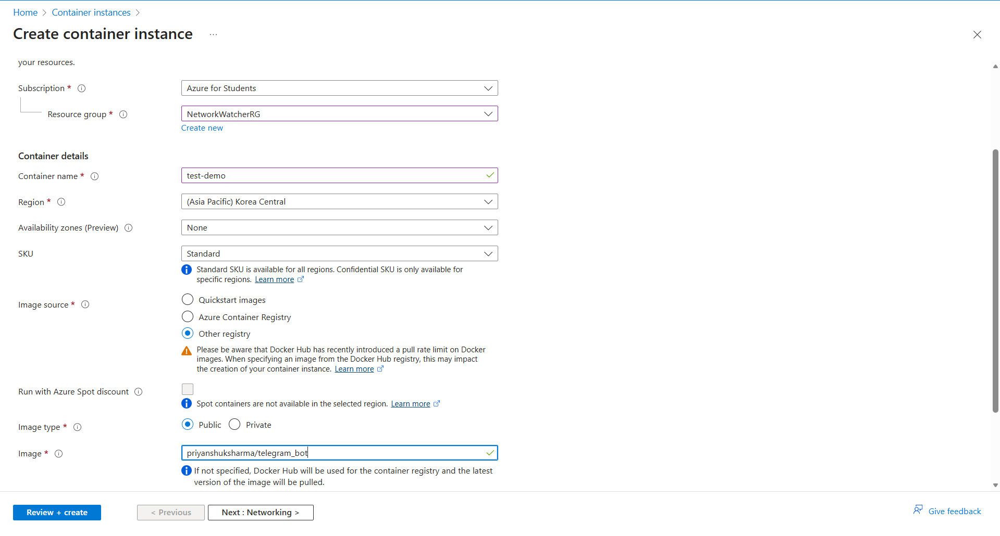
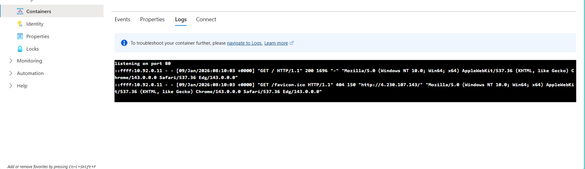

📦 Azure Container Instances (ACI)
📌 Overview
Azure Container Instances (ACI) is the fastest and simplest way to run a container in Azure, without having to manage any virtual machines or adopt a higher-level service like Kubernetes.
- Type: Serverless Containers (PaaS).
- Billing: Per-second billing based on how long the container runs.
- Boot Time: Seconds.
1. Key Concepts
🚀 Serverless
You don't worry about the underlying server. You just say "Here is my Docker Image, run it with 2 CPU and 4 GB RAM." Azure handles the rest.
👥 Container Groups
The top-level resource in ACI is a Container Group.
- Usually contains 1 container.
- Can contain multiple containers (sidecars) that share the same:
- Lifecycle (start/stop together).
- Local network (localhost).
- Storage volumes.
🔄 Restart Policies
- Always: Keep restarting if it crashes (Good for web servers).
- OnFailure: Restart only if it fails (Good for batch jobs).
- Never: Run once and stop (Good for one-off tasks).
3. Serverless Architecture
USER / SCRIPT AZURE CLOUD
============= =============
+-------------+ +------------------------+
| Run Command| -----> | Azure Container Engine |
| (Az CLI) | | (Serverless Management)|
+-------------+ +------------------------+
|
(No VM to Manage) v
+------------------------+
| [+] MyContainer |
| (App + Libs) |
| [ Public IP ] |
+------------------------+
2. Use Cases
- Event-Driven Applications: Run a script when a file is uploaded to Storage.
- Data Processing Jobs: Crunch numbers for 10 minutes and then stop.
- Bursting from AKS: If your Kubernetes cluster is full, you can "burst" extra pods into ACI (Virtual Nodes).
- Dev/Test: Quickly test a new container image.
3. 🛠️ Hands-on: Create ACI with Azure CLI
Step 1: Create a Container
Run a public Nginx image.
az container create \
--resource-group myResourceGroup \
--name myContainer \
--image nginx \
--ports 80 \
--dns-name-label my-unique-app-dns
Step 2: Verify it Works
Get the URL (FQDN) of your container.
az container show \
--resource-group myResourceGroup \
--name myContainer \
--query ipAddress.fqdn \
--output tsv
Step 3: View Logs
See what's happening inside.
az container logs --resource-group myResourceGroup --name myContainer
Step 4: Delete
az container delete --resource-group myResourceGroup --name myContainer
💡 Exam Tips for AZ-900
- Simplest Way: ACI is the "Simplest" way to run a container.
- No Orchestration: If you need scaling, auto-healing, or complex networking, use AKS. If you just need to run "x", use ACI.
- Per-Second Billing: Great for short-lived tasks.